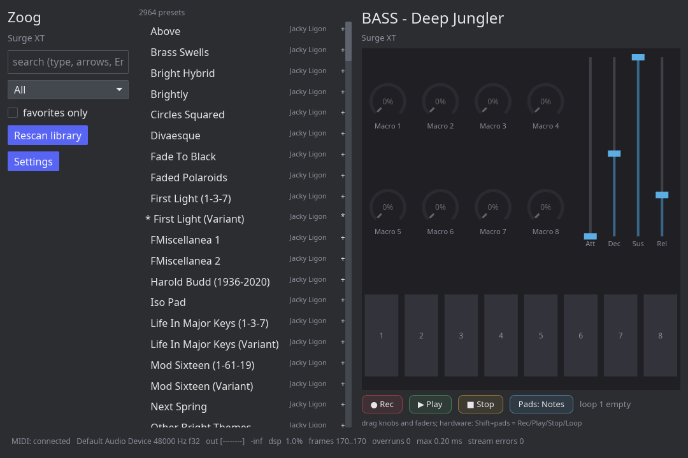
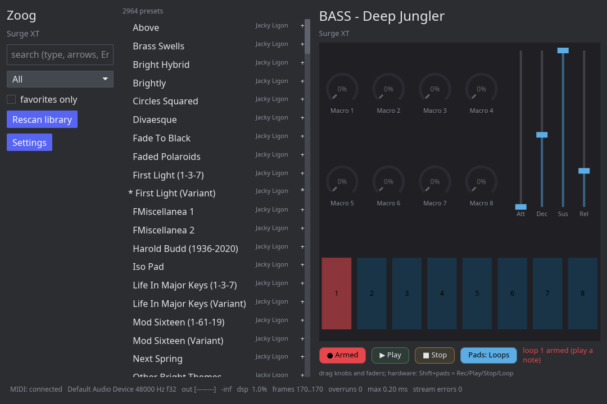
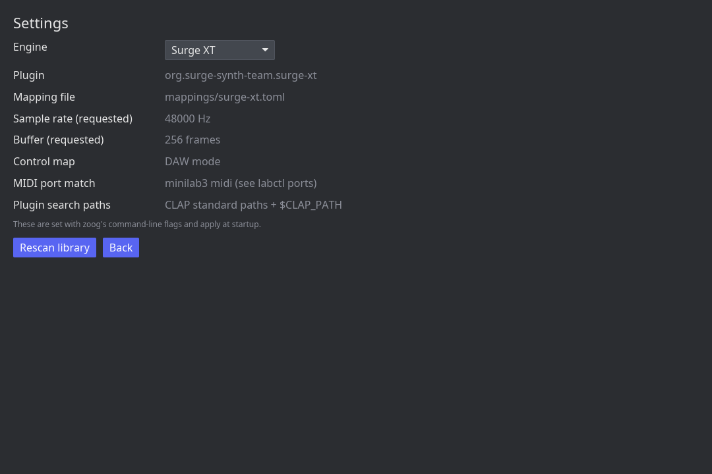

What Zoog is
Zoog gives the MiniLab 3 the workflow its bundled software offers on Windows and macOS, natively on Linux: plug the controller in, browse a searchable preset library from the hardware or the screen, play with low latency, and shape the sound with the eight encoders and four faders while the device display follows along.
It hosts CLAP instruments. Surge XT and Odin2 work out of the box; other CLAP synths appear automatically once installed.
Install
From the apt repository (recommended)
Debian, Ubuntu, and derivatives such as Pop!_OS. Updates then arrive with the rest of your system updates.
curl -fsSL https://cwhite911.github.io/zoog/apt/zoog-archive-keyring.asc \
| sudo gpg --dearmor -o /usr/share/keyrings/zoog-archive-keyring.gpg
echo "deb [signed-by=/usr/share/keyrings/zoog-archive-keyring.gpg] \
https://cwhite911.github.io/zoog/apt stable main" \
| sudo tee /etc/apt/sources.list.d/zoog.list
sudo apt update && sudo apt install zoogThe archive is signed with the Zoog archive signing key, fingerprint
B590 7E00 8959 57F0 04DB 2DE0 31D8 1859 02A1 4DBE.
Single package
Download the .deb from the
latest release:
sudo apt install ./zoog_0.1.0-1_amd64.debEither way you get the zoog application, the labctl
debug CLI, the desktop entry, and the bundled engine mappings.
From source
git clone https://github.com/cwhite911/zoog.git
cd zoog
./scripts/check-env.sh # verifies toolchain, ALSA, Vulkan, a CLAP synth
cargo build --release
./target/release/zoogA synth to play
Zoog hosts plugins, it does not make sound on its own. Install at least one CLAP instrument:
| Engine | How | Notes |
|---|---|---|
| Surge XT | sudo apt install surge-xt |
Default engine. Full preset library and 8 macros. |
| Odin2 | Install the project's .deb |
Works, but exposes no CLAP preset discovery, so its library is empty in Zoog. |
Plugins are found in ~/.clap, /usr/lib/clap, and
anything in $CLAP_PATH. Check what Zoog can see with
labctl plugins, which also reports plugins that failed to load
and why.
First run
- Plug in the MiniLab 3.
- Put it in DAW mode. This matters: the device display and the transport pads only work in DAW mode.
- Launch Zoog. The first launch scans the engine's preset library, which takes roughly half a minute for Surge XT's ~3000 patches, then remembers it.
- Play. The status bar should read
MIDI: connectedand show your audio device.
The interface

The status bar along the bottom is the health readout: MIDI connection, the negotiated audio device and sample rate, an output level meter, DSP load, the block size the backend is really delivering, callback overruns, and any stream errors. If something goes quiet, look here first.
Browsing presets
On screen
Type to search, use the category picker or the favorites filter to narrow the
list, and click a preset once to select it, again to load it. Keyboard:
arrows move the selection, Enter loads, Ctrl+F
toggles a favorite.
On the hardware
| Control | Does |
|---|---|
| Main encoder, turn | Scroll the filtered list; the name and position show on the display |
| Shift + main encoder | Change category |
| Main encoder, click | Load the selected preset |
The on-screen list follows the hardware selection, so you can browse entirely from the device and still see where you are.
Macros
The eight encoders and four faders are mapped per engine. For Surge XT the encoders drive the patch's eight macros and the faders drive the amplitude envelope (attack, decay, sustain, release).
Two details make this pleasant in practice:
- Live names. When a patch names its macros, the knob labels and the device display show those names. Macros the patch leaves unassigned are dimmed, so you can see at a glance which encoders will do something.
- No value jumps. The encoders send absolute positions, so after a preset change the knob rarely matches the parameter. Zoog scales your movement into the remaining range: the value responds immediately, and knob and parameter converge instead of the value leaping.
Dragging an on-screen knob or fader works too, and updates the hardware display.
The looper
Zoog records what you play as MIDI and cycles it back through the loaded engine. On the hardware this lives on the Shift row of the pads; on screen it is the transport strip under the macro panel.
| Button | Does |
|---|---|
| Record | Arms. Recording starts at your first note, so there is no dead air. Press again to close the loop, which starts playing immediately. While playing, Record toggles overdub. |
| Loop | Closes the take while recording; otherwise restarts playback from the top. |
| Play | Restarts the loop. |
| Stop | Stops playback. During a take it discards it. Pressing it again on a stopped loop clears it. |
Loops are session-only and free-running: there is no tempo grid or quantized launch yet, so loop length is exactly how long you played.
Loop slots
Switch the pads from notes to loop slots with Shift + Tap on
the hardware, or the Pads button on screen. Each of the eight pads
then becomes an independent loop, with one-tap behavior that depends on what
that slot is doing:
| Slot state | Tapping the pad |
|---|---|
| Empty | Arms it; play to start recording |
| Recording | Closes the loop and starts it playing |
| Playing | Stops it |
| Stopped | Relaunches it |

Each slot keeps the preset it was recorded with. Record a bass line, switch to a pad sound and record chords on the next slot, then take a lead for yourself: every layer keeps its own voice, because Zoog gives each slot its own engine instance and mixes them. Your keyboard and the macros always drive the live preset, never the loops.
Engines

Switching engines restarts the audio core against the new plugin and remembers your choice. Each engine gets its own preset library and its own macro mapping, matched by the plugin's CLAP identifier.
Adding a mapping for a new engine
- Install the plugin, then confirm Zoog sees it:
labctl plugins - List its parameters and find the ones worth a knob:
labctl params --plugin "Name" --find filter - Copy
mappings/surge-xt.toml, setplugin-idto the plugin's identifier, and fill in the parameter ids you found.
Drop the file in mappings/ next to the binary, in
~/.config/zoog/mappings/, or in
/usr/share/zoog/mappings/. Engines without a mapping still play;
their encoders and faders are simply inactive.
Hardware map
Every control map in Zoog was recorded from the device itself rather than guessed. The complete tables, including both device modes and the SysEx messages Zoog sends to the display and pads, live in the repository:
Short version, in DAW mode: keys and pads play, the eight encoders and four faders are absolute controls, the main encoder browses, and the Shift row of pads is the transport (Loop, Stop, Play, Record, Tap).
labctl
The debug CLI that comes with Zoog. It is how the hardware behavior was discovered in the first place, and it is useful when something misbehaves.
| Command | Does |
|---|---|
labctl ports | List MIDI ports the system reports |
labctl monitor --capture FILE | Print and record every incoming message |
labctl display "TOP" "BOTTOM" | Write to the device display (DAW mode) |
labctl pad 3 127 0 127 | Set a pad color |
labctl plugins | List CLAP plugins, including ones that fail to load |
labctl params --find cutoff | Search a plugin's parameters |
labctl presets scan|search|load | Manage the preset library |
labctl play | Run the whole engine headlessly with stats |
Troubleshooting
No sound
Check the output meter in the status bar. If it moves, Zoog is producing audio
and the problem is downstream: confirm your output device is the system default
and its volume is up. If the meter stays at -inf while you play,
check that the status bar says MIDI: connected.
The controller stops responding
Unplug and replug it. Zoog notices within about two seconds, reconnects on its own, and restores the display. A stale USB session can leave the port present but dead, which looks like "everything is fine but nothing works".
A plugin does not appear
Run labctl plugins. Plugins that exist but cannot be loaded are
listed with the loader's reason. A common one is a plugin built against a newer
glibc than your distribution ships; the fix is an older build of that plugin or
building it from source.
Audio stalls
If the stream dies, Zoog notices, says so in the status bar, and rebuilds it automatically, retrying a few times before giving up and asking for a restart.
Videos
Short demos are coming here: browsing the library from the main encoder, building a layered loop across several pads, and macro control with the display feedback.
ffmpeg -f x11grab -framerate 30 -i :1 -f pulse -i default
demo.mp4 captures screen and audio together on an X11 session. Drop the
file in docs/img/ and it can be embedded here.